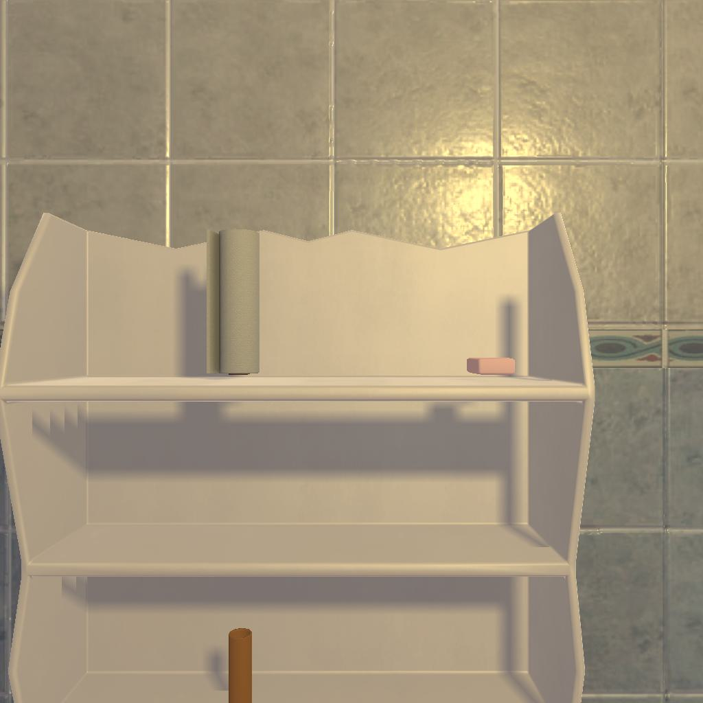

---------------------------------------------------------task: 25---------------------------------------------------------
--------------------------------------------------------------------------------------------------------------------------------------------------------------------
--------------------------------------------------------------------------------------------------------------------------------------------------------------------
Step:--------------------------------------------------------------------------18-------------------------------------------------------------------------------
----------------------------------------
VLM Prompt:
Image1:
Image2:
Image3:
**Instruction**
1. Analyze the provided images to identify all visible household objects and compare the difference between images (e.h. whether the object is opened or not and taken on hand or not), focusing on those relevant to the task description "find two dishsponge and put them in cart."
2. Use the analysis of images and the task hint "The agent must find an object of the desired type, pick it up, find the correct location to place it, put it down there, then look for another object of the desired type, pick it up, return to previous location, and put it down there with the other object." to answer the question: what is the most reasonable action in the choices for the task description "find two dishsponge and put them in cart"?
3. Decide and write the answer using the template: The answer is: (i): , where i is the real number. If there is no desired object in images, search every place based on **Initial Observation** to find the object. And if no one is exactly correct, choose a similar answer.
**Initial Observation**
You are in the middle of a room. Looking quickly around you, you can see bathtub (1), bathtubbasin (1), cart (1), toilet (1), garbagecan (1), toiletpaperhanger (1), shelf (1-4), sink (1), sinkbasin (1), handtowelholder (1)
**Answer Choices**
(1): go to bathtub 1
(2): go to bathtubbasin 1
(3): go to cart 1
(4): go to toilet 1
(5): go to garbagecan 1
(6): go to toiletpaperhanger 1
(7): go to shelf 1
(8): go to shelf 3
(9): go to shelf 4
(10): go to sink 1
(11): go to sinkbasin 1
(12): go to handtowelholder 1
(13): take papertowelroll 1 from shelf 2
(14): take toiletpaper 1 from shelf 2
(15): take soapbar 1 from shelf 2
**Answer**
Let's think step by step by following the instructions.
----------------------------------------
----------------------------------------
Original Response:
Firstly, looking at the images provided, we can see that they show a shelving unit with various objects on it. On the second shelf in all three images, there is a roll of paper towels and a bar of soap. There is no visible difference between the images concerning the objects; they all seem to be in the same state (none of them are opened or being held).
According to the task description "find two dishsponge and put them in cart," and the task hint, we need to identify the location of the dishsponges, pick them up, and place them in the cart. However, there are no dishsponges visible in the provided images. Thus, we need to search every place based on the **Initial Observation** to find the dishsponges.
Since none of the answer choices directly mention finding or picking up a dishsponge, we must choose the most logical next step based on the initial observation and the items seen in the images. The items on the shelf do not match the task's requirement, so we can eliminate choices (13), (14), and (15).
Based on the initial observation, the cart is the location where we eventually want to place the dishsponges. Therefore, the most reasonable action would be to go to the cart to prepare for placing the dishsponges once they are found. Hence, the answer is:
The answer is: (3): go to cart 1
----------------------------------------
----------------------------------------
>>> Refine Original VLM Response and Get Pure Action: go to cart 1
----------------------------------------
-----------------------------------------------------------------
Running time: 104.96454691886902 seconds
Total Money: 16.007790000000004
-----------------------------------------------------------------
-----------------------------------------------------------------
Text Observation:You arrive at loc 2. On the cart 1, you see a cloth 1, and a toiletpaper 2.
-----------------------------------------------------------------
UNSUCCEED